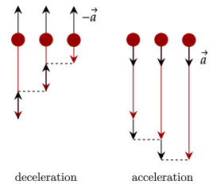

When describing a particle's motion, it is helpful to note that motion is just the change in a particle's position over a certain time. With this, we note the first quantity of use which is
The symbol for position may vary based on the problem. Since there is a change in the particle’s position, it is helpful to quantify this as well. There are two ways to quantify this change.
Distance and displacement have similar definitions yet differ immensely.
Distance measures the path taken by the particle, which means it goes through the entire path, while displacement measures the shortest distance between the starting and ending position, which is a straight line.
One property is that distance will always be greater than or equal to the displacement.

It can be seen that the displacement is less than the distance. The distance is simply the sum of the lengths the woman walked, which is .
The displacement on the other hand can be calculated via the pythagorean theorem. To get the horizontal and vertical components of the 35° walk, we use trigonometry.
Recall that we noted that motion is the change of position over a certain time. With this, it is a necessity that we introduce time to quantify how slow or fast an object is moving.
Now that we have added time, we can now analyze how fast or slow a certain motion occurs, which gives us two new quantities.
To calculate the average velocity of a particle, just take the displacement and divide it by the time it took to travel that displacement.
Here, (read as "delta x") means the change in the value x, or position. It can be calculated below, which is the final position minus the initial position.
As with displacement and distance, velocity and speed are different as well. Velocity measures the displacement done over a length of time, while speed measures the distance travelled.

Just like distance may not equal displacement, velocity may not equal speed. If one goes around a circular track and ends up back where they started, their distance will be the circumference of the track, but their displacement will be zero.
While it is useful to have the average velocity, we sometimes need the instantaneous velocity of a particle; in other words, the velocity of a particle at a given instance of time.
To help find this, let's say we can get the position of a particle at any given time. For example, let's say the object is moving at a constant velocity, so at 1s it is at 1m, while at 2s it is at 2m. In other words, we can plug in time, and get a position value out.

We can write this as a function, or . Now, let's imagine having a certain time and adding a little more to it, let's call .

If we want the average velocity between these two values, we use our formula.
Now, let's subtitute in our two values.
Does this look familiar? This looks like the equation for the limit-definition of a
How is this useful? We can now get the velocity of an object at any given time if we please. We examine this in more detail in our study of motion graphs.
Most particles don't have a constant velocity or speed. For example,
Note that unlike what you may think, acceleration can be negative, as it is a

As can be seen, deceleration occurs when the velocity and acceleration don't share the same sign; here, positive means "going down", while negative means "going up".
Calculating the average acceleration is similar to calculating the average velocity. It is the change in velocity over the time elapsed to change that velocity.
Recall what we did to get the instantaneous velocity; we can do the same argument to get the instantaneous acceleration. We will analyze this later.
One thing to note is that some of these quantities require a direction; for example, velocity doesn't make sense unless you tell which way you are going, and acceleration requires a direction to tell if it is decelerating or accelerating. Later, we will find out that these things which need direction are called